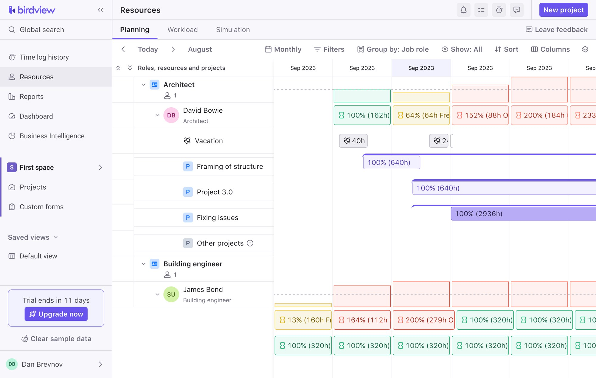

01 · Birdview PSA · B2B SaaS · 2023 — 2024
Resource planning for BirdviewРесурсное планирование в Birdview
The workload of a whole company on one screen: who is free, who is overloaded, and how to fix it in place.Загрузка всей компании на одном экране: кто свободен, кто перегружен и как это исправить на месте.
